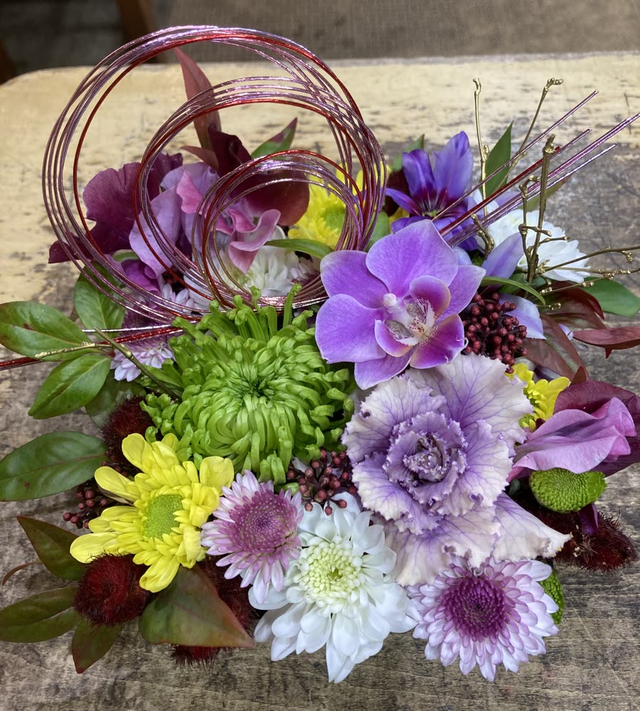
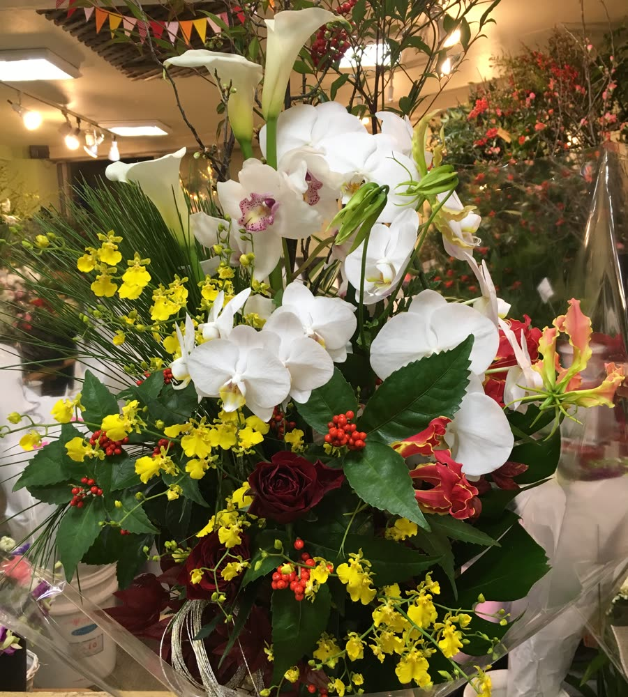
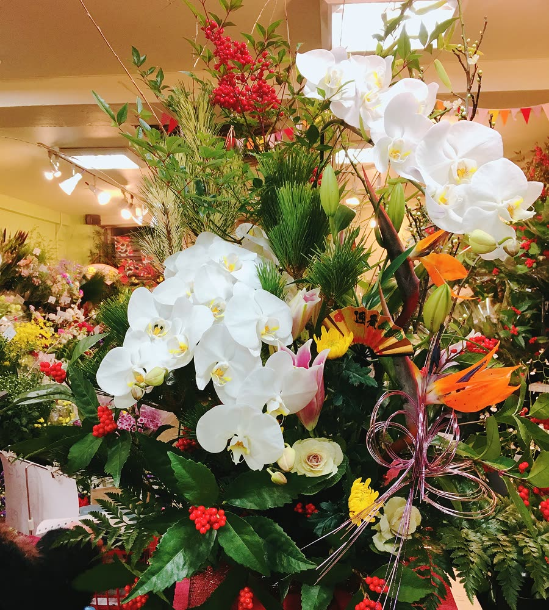

会社の受付・ロビーに
年始のご来客を、お正月らしいアレンジでお迎えしませんか。ご予算・置き場所に合わせてお作りします。

受付カウンター向け
カウンター・応接室に
幅 約25〜30cm・高さ 約30〜40cm
5,000円〜（税別）

おすすめ
ロビー・エントランス向け
入口・ロビーのテーブルに
幅 約40〜50cm・高さ 約50〜60cm
10,000円〜（税別）

大型・壺活け風
広いエントランス・床置きに
幅 約65〜75cm・高さ 約80cm〜
20,000円〜（税別）
写真は以前お作りしたものです。花材の入荷状況により、内容が変わる場合があります。
ご注文について（会社・お店の方）
📅
締め切り：12月20日（日）数に限りがあります。お早めにどうぞ。
🚚
お届け：12月28日（月）までのご希望の日時配達・設置いたします。
💴
配達料：西区は無料そのほかの札幌市内は500円（税込）。定山渓をのぞきます。
🧾
請求書でのお支払いOK法人様は請求書払いができます。
ご家庭のお正月に
玄関やリビング、仏様にも。年末はお正月用のお花をたくさんそろえます。
🎍 お正月アレンジ
器に入って、そのまま飾れます。玄関・リビング・テーブルに。ご予算に合わせてお作りします。
🌲 松・千両・南天などの枝もの
ご自宅の花器に活けたい方に。お正月用の枝ものを多めにそろえます。
🌸 仏様・お墓のお花
新しい年を迎えるお供えのお花も、ご用意しています。
🌿 榊（さかき）
神棚用の榊もあります。
年末（12月27日〜31日）はとても混み合います。アレンジはお電話か店頭でのご予約がおすすめです。
お正月の縁起のよいお花
松一年中緑の葉で、長寿や繁栄のしるし
千両名前のとおり、商売繁盛・お金に困らない
南天「難を転ずる」で、厄よけ
葉牡丹重なる葉を「吉事を重ねる」に見立てて
お店のこと
| 店名 | フィオーレ・サンマルコ |
|---|---|
| 住所 | 〒063-0033 札幌市西区西野3条4丁目1-17 地図を開く |
| 営業時間 | 9:15〜18:00（不定休） 年末年始の営業はInstagramでお知らせします |
| 電話 | 011-662-8125 |
| FAX | 011-213-8768 |